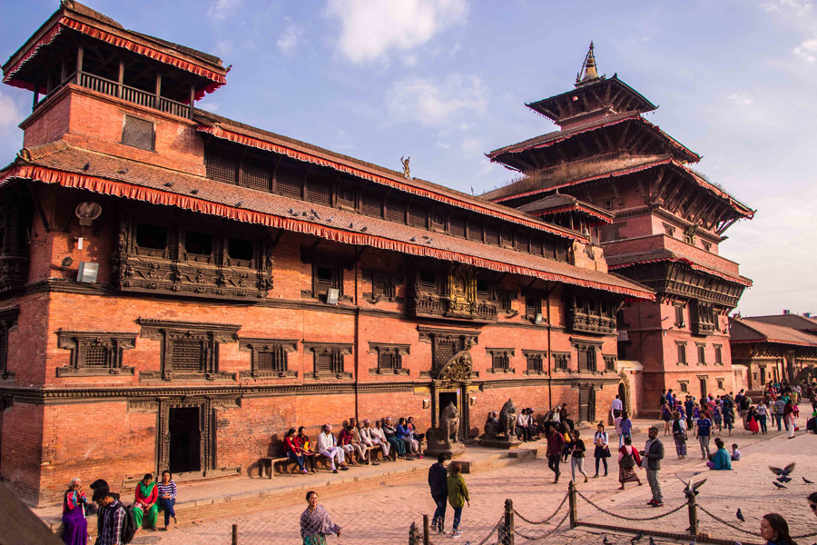
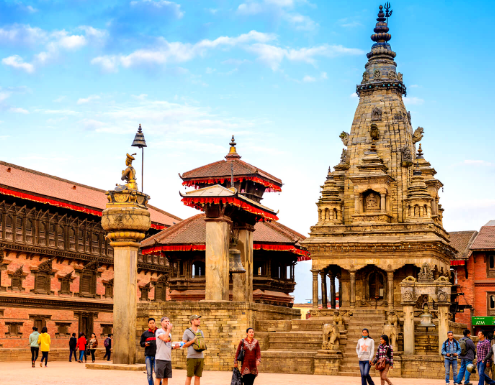
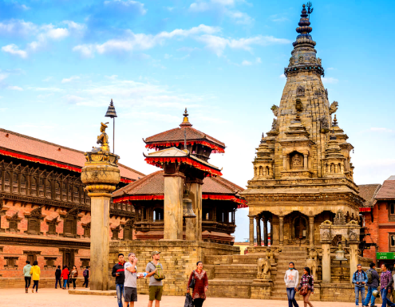

Patan Durbar Square

Patan Durbar Square, located in the city of Patan (also known as Lalitpur), is a mesmerizing heritage site
in the Kathmandu Valley. As a UNESCO World Heritage Site, it is renowned for its remarkable collection of
ancient temples, palaces, courtyards, and intricate Newari architecture.
 The main attraction of Patan Durbar Square is the ancient Royal Palace, also known as the Patan Museum. The
palace showcases exquisite woodwork, stone carvings, and metalwork, offering a glimpse into the opulence and
grandeur of the Malla dynasty that once ruled Patan. The museum houses a remarkable collection of religious
art, sculptures, paintings, and artifacts that depict the rich cultural heritage of the region.
The main attraction of Patan Durbar Square is the ancient Royal Palace, also known as the Patan Museum. The
palace showcases exquisite woodwork, stone carvings, and metalwork, offering a glimpse into the opulence and
grandeur of the Malla dynasty that once ruled Patan. The museum houses a remarkable collection of religious
art, sculptures, paintings, and artifacts that depict the rich cultural heritage of the region.
Patan Durbar Square is adorned with numerous temples, each a masterpiece in its own right. The Krishna
Mandir, dedicated to Lord Krishna, is a striking example of stone architecture and is considered one of the
most important Hindu temples in Patan. The Bhimsen Temple, dedicated to the deity Bhimsen, is another
notable temple known for its intricately carved wooden facade.
The square is also home to the iconic Patan Golden Temple (Hiranya Varna Mahavihara), a Buddhist monastery
famous for its gilded facade. The temple's golden exterior and intricate artwork draw visitors from far and
wide, providing a glimpse into the rich Buddhist heritage of the region.
Exploring Patan Durbar Square is like stepping back in time. The narrow winding lanes, traditional Newari
houses, and bustling bazaars create a vibrant and captivating atmosphere. The square is also known for its
traditional artisans, who continue to practice ancient crafts such as metalwork, woodcarving, and stone
carving. Visitors can witness these skilled craftsmen at work, creating intricate masterpieces using
techniques passed down through generations.

 
